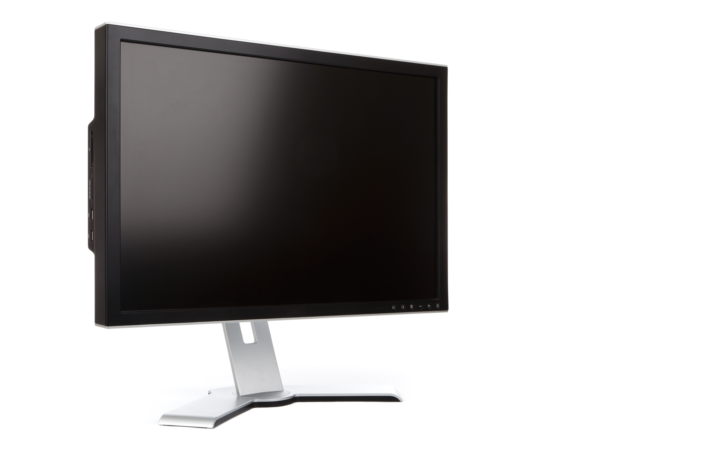
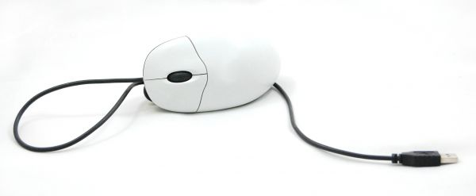
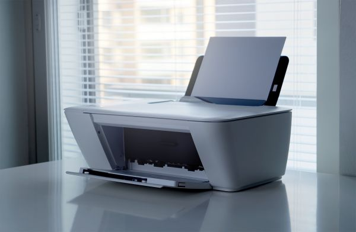
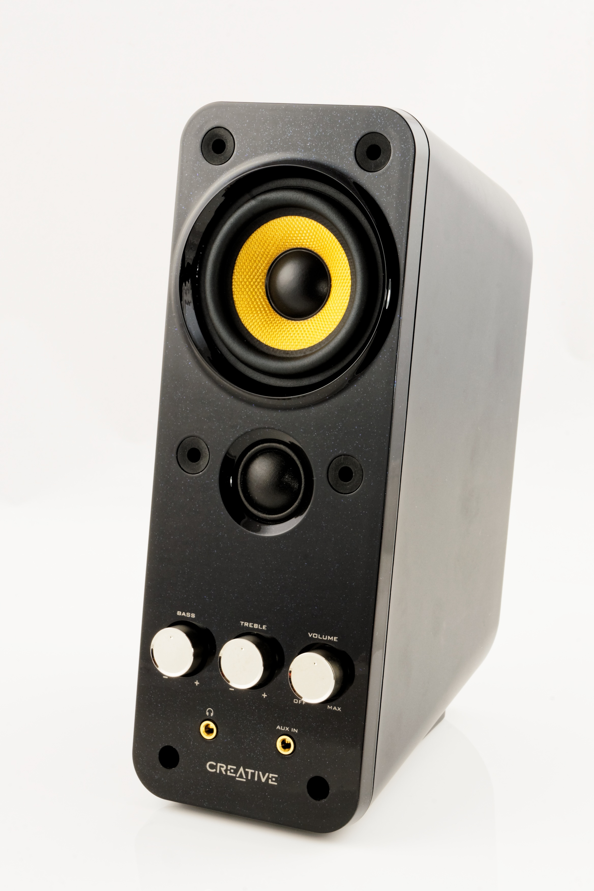
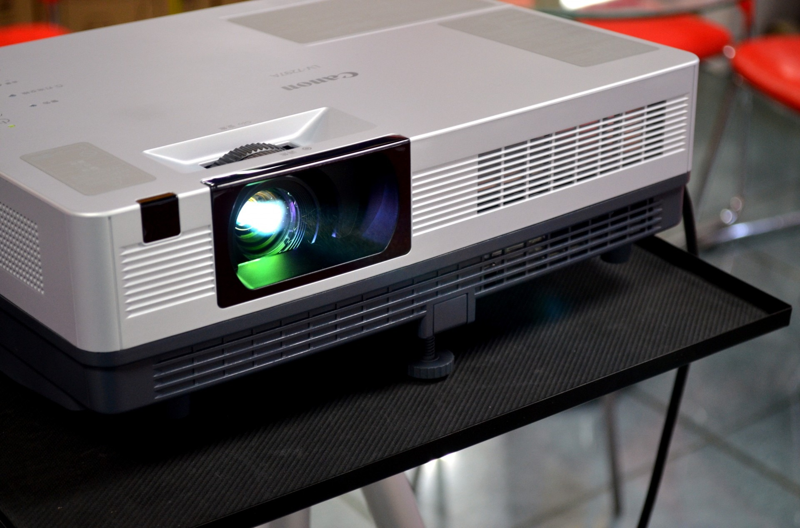

Monitor
Es el dispositivo principal de salida de datos de la computadora. Nos muestra la interfaz gŕafica del sistema operativo y de los distintos software que utilicemos.

Teclado
El teclado es el dispositivo periférico de entrada de información más importante de la computadora. Es de entrada porque permite introducir información en el equipo.
Este dispositivo está compuesto por una serie de teclas y un microprocesador que transmite la información desde el teclado hasta el procesador central de la computadora.

Mouse
Un ratón es un pequeño dispositivo que el usuario de una computadora desliza sobre la superficie de un escritorio para señalar un punto en la pantalla y seleccionar una o más acciones desde esa posición.

Impresora
Una impresora es un dispositivo de salida que permite producir un documento u objeto físico a partir de información digital. Se suele conectar con una computadora mediante cables, Bluetooth o wifi, donde seleccionamos el texto, imagen o los datos a imprimir.

Altavoz o Parlante
Los altavoces y auriculares son aparatos que convierten las señales eléctricas en sonido. Nos permiten disfrutar de las bandas sonoras de películas, series y videojuegos, así como escuchar nuestra música favorita, escuchar charlas y comunicarnos con otras personas.

Microfono
El micrófono es un dispositivo periférico de entrada de información. Este se encarga de capturar los sonidos que se producen alrededor de la computadora.
Una vez que se ha capturado el sonido, este puede ser almacenado en el equipo (como una grabación), enviado a otro equipo (como una llamada) o enviado a las cornetas para ser amplificado.

Proyector
Son dispositivos que reciben información del sistema computarizado y la representan gráficamente (de forma similar a los monitores). En lugar de emitir en una pantalla, los proyectores proyectan la información como haces de luz y en superficies más grandes, como paredes.
